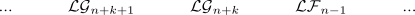
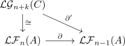

natural isomorphism for a shift of coeffacable left derived functors
Proposition
Let $\mathcal{A}, \mathcal{B}$ be abelian categories, $\mathcal{F}, \mathcal{G}$ right exact functors and $\{\mathcal{LF}\}, \{\mathcal{LG}\}$ the left derived functors. Suppose there exists a natural isomorphism
\begin{align*}
\mathcal{LF}_n(-) \cong \mathcal{GF}_{n+k}(-)
\end{align*}
for $n \geq 0, \vert k \vert \leq n$, such that $\mathcal{GF}_{n+k}, \mathcal{GF}_{n+k+1},...$ are coeffacable
Then it follows that

is a left derived functor of $\mathcal{F}$ and hence each $\mathcal{LG}_{n+k+j} \cong \mathcal{LF}_{n+j}$ by the uniqueness of the characterization by a universal property.
Proof
delta functor
exact
follows from the natural iso
natural in exact sequences
follows from naturality
boundary map
For

this follows from the composition

universal
corollary of